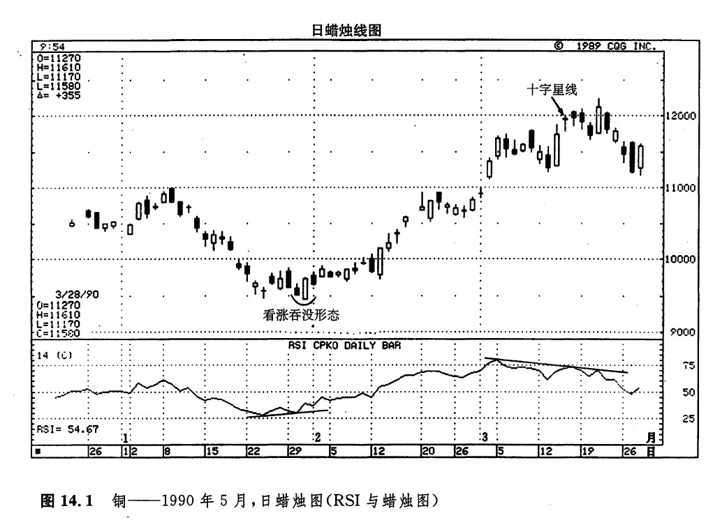
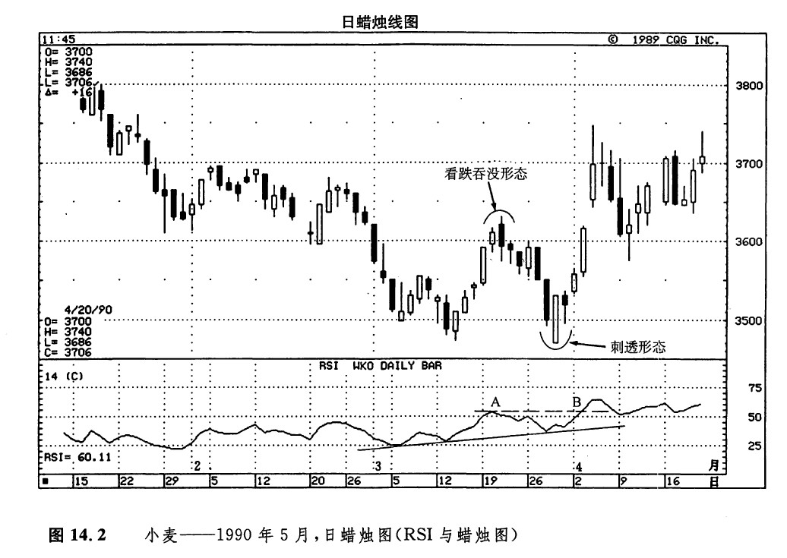
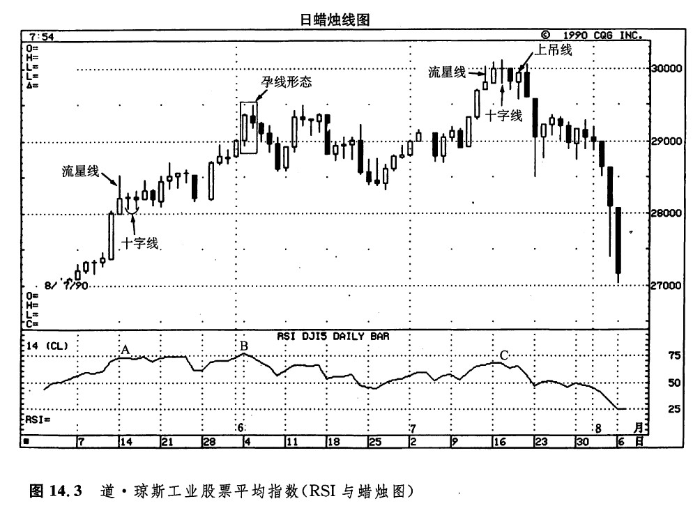

RSI的两个主要的用途是，构成超买／超卖指标，作为监测相互背离现象的工具。
RSI作为超买／超卖指标的使用方法是，当RSI向上趋近其取值范围的上边界时（即，当它高于70或80时），表明市场处于超买状态。在这样的情况下，市场也许变得比较脆弱，容易引发向下回落的过程，或者即将转入横向调整阶段。与此相反，当RSI处于其取值范围的下边界时（通常低于30或20），则认为RSI反映了超卖状态。在这样的环境下，市场有可能形成空头买入平仓行情。
利用RSI揭示相互背离现象的具体方法是，当价格向上刨出当前趋势的新高时，RSI却没有形成新高，未能与之配合，这就构成了一个负面相互背离信号，可能是一个看跌信号；当价格向下跌出当前趋势的新低时，RSI却没有形成新低，则构成了正面的相互背离现象。在相互背离现象出现时，如果RSI摆动指数的数值正处在超买区或超卖区，则相互背离现象具有更强的技术意义。
在图14.1中，既显示了一个看涨的正面RSI相互背离现象的例子，也显示了一个看跌的负面RSI相互背离现象的例子，两者分别为蜡烛图分析提供了参考依据。在1月24日的低点处，RSI的数值为28%。1月31日，市场形成了当前趋势的新低点。此时，RSI的数值是39%。这个数字明显高于1月24日的28%。新低价格水平对应着较高的RSI水平，构成一个看涨的正面相互背离信号。除了该正面相互背离信号之外，1月31日的白色蜡烛线覆盖了前一根黑色蜡烛线，产生了一个看涨的吞没形态。

如图所示，3月14日是一根十字星线。次日，市场又形成了一根近似于上吊线的蜡烛线（这一天的下影线不够长，因此不能算作一个标准的上吊线）。就在上述潜在的看跌蜡烛图信号出现的同时，RSI也发出了一个警告信号。具体来说就是，对应于3月15日和16日的价格新高峰，RSI图线却呈现出逐步降低的局面。这就形成了一个看跌的负面相互背离信号。3月21日，市场又发动了另一轮向上的冲击，尽管这里也形成了价格新高，但是RSI的水平依然持续下降。结果，市场向下回落，一直达到了3月形成的位于1.11美元处的支撑区。
图14.2所示为从一个看跌吞没形态开始的下跌行情终止于一个剌透形态。从这个剌透形态看，市场的前景具有建设性。这一技术意义得到了RSI的正面相互背离现象的支持。有些技术分析师也对RSI的图线进行趋势线分析。在这一实例中，尽管3月29日价格创出了新低，但图示的RSI上升趋势的支撑线却维持着它的有效地位。

图14.2解释了我们将蜡烛图与RSI结合起来的另一个理由。有时候，RSI需要得到进一步的验证才能构成交易信号，而蜡烛图也许能抢先第三者一步，发出这样的看涨或看跌验证信号。具体说来，如果RSI先后满足了下列二个条件，有些技术分析者就将之归结为一个看涨信号。首先，RSI必须与价格形成正面相互背离；其次，RSI必须向上涨过前一个高点。在这一实例中，这就意味着RSI必须向上超过4月20日的数值（如点A所示）。根据上述要求，只有等到点B处，RSI的看涨信号才能够最后完成。然而，通过前面讨论的看涨蜡烛图指标（那根刺透线）与RSI正面相互背离信号的综合分析，早在点B几天之前，我们就有可能得出这个看涨信号。
在上升趋势的发展过程中，十字线的出现是一个警告信号。但是，同所有的技术线索一样，这也可能使我们误入歧途。如果我们要把这种误导的技术信号过滤掉，那么，参照其他的技术分析工具是一个办法。图14.3显示了利用RSI作为其验证工具的一个实例。5月中旬，市场形成了一根看跌的流星线，以及一系列十字线（点A所示的期间）。这些信号标志当前的上升趋势已经结束，因此至少在此后的数周里，市场暂时转入一个水平的交易区内中。经过这个调整阶段后，市场在点B处形成了一轮上涨行情，将价格推到了新高水平。此处的新高价格水平，比A点处高点的水平高100个点。不过，在点B处，RSI的值却还处在点A处的水平。这反映出市场内部的上升动力已经有所不济。在点B处，还有一个孕线形态，这又为我们拉响了一次警报。

在点B所示的期间，市场从高位向下回落了100点。经过这一段调整，市场再度形成一段上涨行情。经过这一次上涨，市场在点C处向上触及了3000点的水平。此时的新高价位已经向上急剧地超越了点B处的市场价位，但是与此形成鲜明对照的是，RSI的水平却明显降低了。在点C处，除了上述看跌背离信号之外，市场还形成了图示的一根流星线、一根十字线以及一根上吊线。这些蜡烛线的出现说明，尽管价格达到了新高，但是市场的内部架构已经摇摇欲坠了。
copyright @ 2018 制作：汉钛电线，Hingtak Wire & Cable LLC